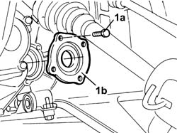
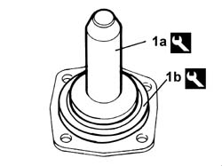
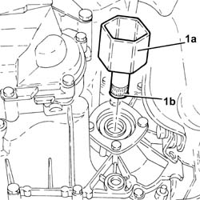
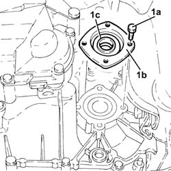
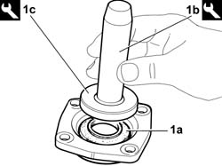
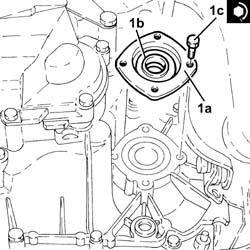

2110d52 l/h flange on differential - r + r with drive shaft removed
- Path
- Procedures > 21 GEARBOX UNIT > 2110 MANUAL GEARBOX WITH DIFFERENTIAL > 2110D MANUAL GEARBOX DIFFERENTIAL > 2110d52 l/h flange on differential - r + r with drive shaft removed
- Kind
- repair procedure (removal / refitting; the operation number is the code)
- Applies to
- all engines; all production periods
- Interactive page
- https://sloeber94.github.io/elrnDB-fDbl/en/#/2584587
Applies to: all engines; all production periods
 Removing
Removing
 Refitting
Refitting1. Undo the fixing bolts (1a) and remove the flange (1b) complete with oil seal.
Remove the scraper ring.

Applies to: all engines; all production periods
Refitting
RemovingReplace the oil seal.
1. Remove the oil seal from the flange (a destructive operation) and, using the tools (1a) and (1b), fit the new oil seal.
 | Name | Country |
|---|---|---|
1a | Grip | 1.870.007.000 |
| Name | Country |
|---|---|---|
1b | Fitting tool | 1.870.629.000 |

Applies to: all engines; all production periods
Fit the scraper ring.
Fit the flange, tightening the bolts to torque.
Applies to: engines: 1.9 JTD 8V; all production periods
Removing
Refitting1. Remove the left internal differential driveshaft (1a) complete with circlip (1b).

Applies to: engines: 1.9 JTD 8V; all production periods
1. Undo the bolts (1a) and remove the left flange on the differential (1b), complete with oil seal (1c).

Applies to: engines: 1.9 JTD 8V; all production periods
At the bench, release the oil seal from the flange (this operation destroys it).
Applies to: engines: 1.9 JTD 8V; all production periods
Refitting
Removing1. Fit a new oil seal (1a) on the left flange on the differential using the tools (1b) and (1c).
| Name | Country |
|---|---|---|
1b | Grip | 1.870.007.000 |
| Name | Country |
|---|---|---|
1c | Fitting tool | 1.870.629.000 |

Applies to: engines: 1.9 JTD 8V; all production periods
1. Refit the left flange on the differential (1a), complete with oil seal (1b), and secure it tightening the bolts (1c) to the recommended torque.
 | Fastening | Component | Ø | Value (daNm) |
|---|---|---|---|---|
1c | - | - | - | - |

Applies to: engines: 1.9 JTD 8V; all production periods
Place the left differential internal driveshaft back in its housing complete with a new seal.